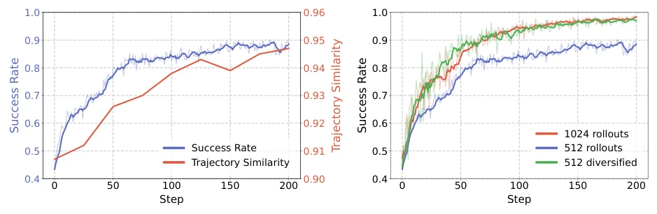
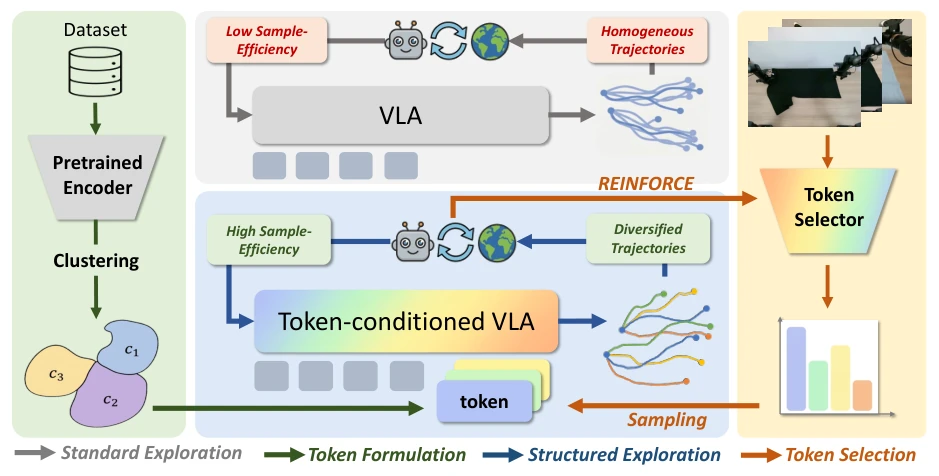
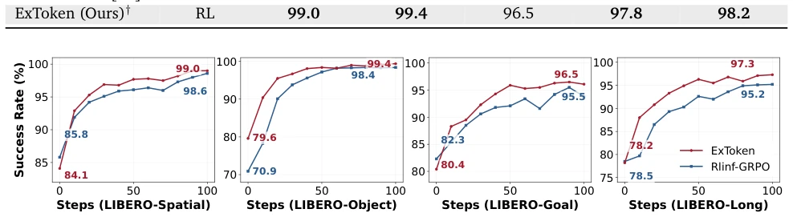
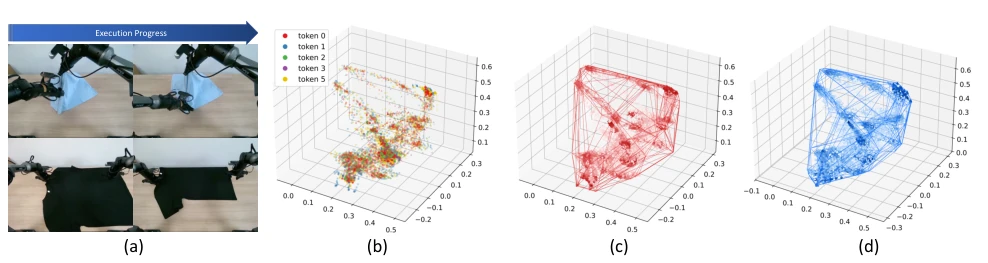
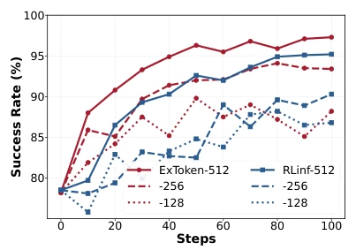
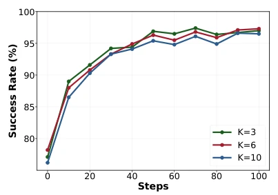
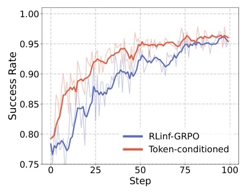
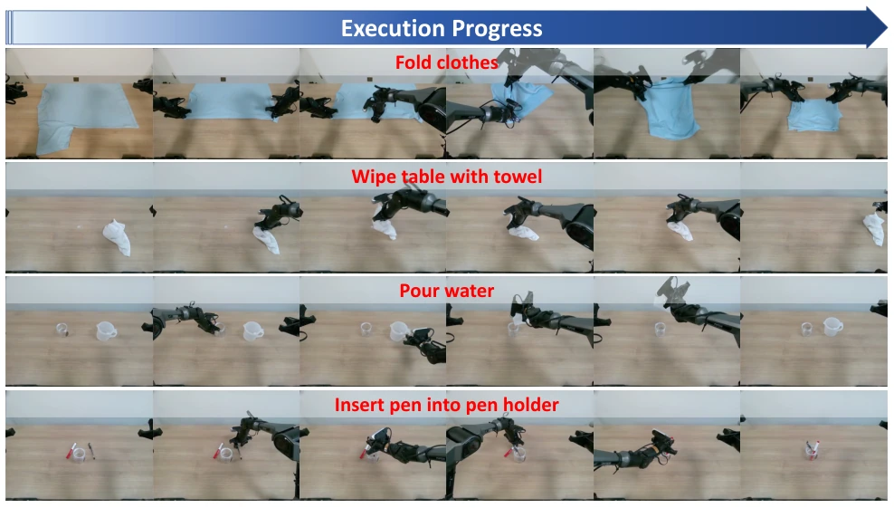
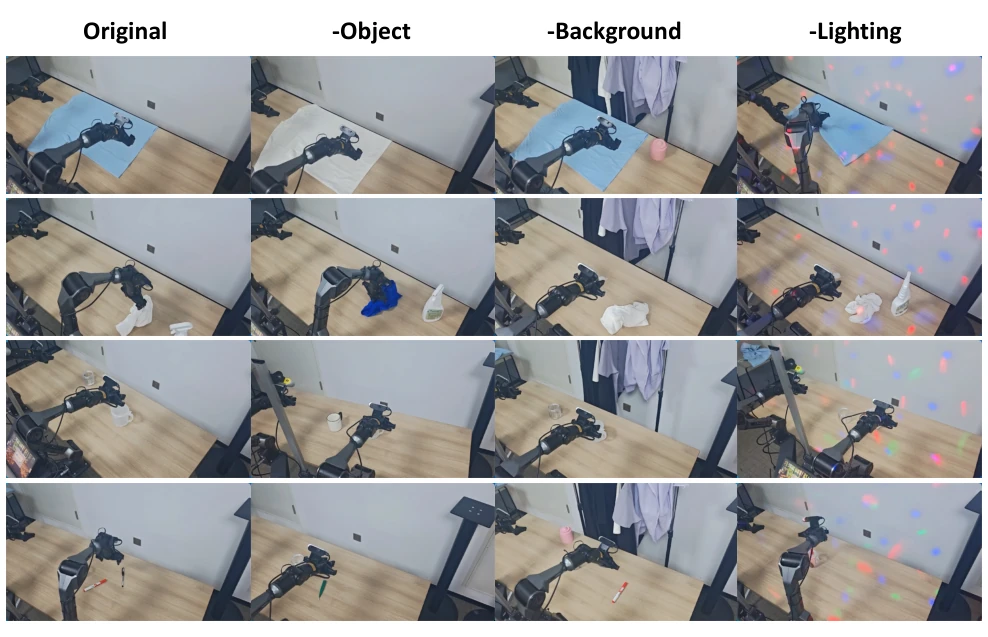

这篇论文终于戳破了 VLA-RL 的窗户纸：光堆数据没用，得堆多样性。作者发现标准随机采样会导致“动作模式坍塌”，策略越来越懒，只走老路，导致探索停滞。ExToken 用离线演示聚类出行为 Token，强制策略在不同模式下探索，确实比单纯增加采样量有效。不过，Token 数量 K 敏感，极端预算下也不稳，现实测试任务偏少，有点“仿真强、实战弱”的嫌疑。虽然用了 Token，但本质还是聚类，可能丢失细粒度信息。但作为探索机制的改进，思路清晰，值得借鉴。
This paper finally pierces the veil of VLA-RL: merely piling up data is ineffective; diversity must be accumulated. The authors find that standard random sampling leads to "action mode collapse," where the policy becomes increasingly lazy, sticking only to old paths, causing exploration stagnation. ExToken clusters behavior Tokens from offline demonstrations, forcing the policy to explore across different modes, which proves indeed more effective than simply increasing the sampling volume. However, the Token count K is sensitive, and it is unstable under extreme budgets; real-world test tasks are relatively few, raising some suspicion of "strong in simulation, weak in practice." Although Tokens are used, the essence remains clustering, which may lose fine-grained information. However, as an improvement to the exploration mechanism, the idea is clear and worth referencing.
VLA model fine-tuning relies on RL, but the environment interaction cost is extremely high, limiting actual deployment. Existing works such as VLA-RL [28] and RLinf-GRPO [50] mostly focus on reward shaping or value function optimization, neglecting the fundamental impact of active exploration on sample efficiency. Empirical evidence shows that standard random sampling easily leads to action mode collapse [17], with severe trajectory homogenization, causing the policy to converge prematurely to suboptimal solutions. Simply increasing the number of rollouts cannot solve the lack of diversity; how to guide structured exploration at low cost has become a bottleneck.

Figure 1: (Left) As training progresses, trajectory similarity increases linearly, leading to premature convergence to a suboptimal performance level. (Right) Training with 512 diversified trajectories achieves comparable results to using 1024 standard rollouts.
ExToken comprises Token generation and a selector. First, a video encoder extracts demonstration trajectory features, and K-means clustering generates discrete behavior Tokens. In the SFT stage, Tokens are attached to the input sequence to establish a Token-behavior mapping. In the RL stage, Tokens are randomly sampled during rollout to guide the policy to explore different modes. To adapt to deployment, a state-conditioned Token selector is introduced, which predicts the optimal Token based on initial observations; after SigLIP encoding followed by an MLP, it is jointly optimized with the policy using REINFORCE. This design balances training diversity and inference determinism.

Figure 2: Overview of ExToken. Compared to standard exploration, ExToken explicitly utilizes a token to steer structured exploration towards diverse trajectories, achieving higher sample efficiency.
Tested on the LIBERO benchmark and 4 real-world tasks (clothes folding, table wiping, etc.). Comparison baselines include OpenVLA, GRAPE, RLinf-GRPO, etc. The metric is success rate. ExToken achieves an average success rate of 98.2% under a restricted budget, outperforming RLinf-GRPO's 96.8%. Ablation studies show that Token diversity significantly improves state coverage and is robust to lighting and object changes. However, stability decreases under extreme low budgets (128 rollouts), and excessively large K values also result in performance loss.

Figure 4: Learning curves of ExToken and RLinf-GRPO across the four LIBERO task suites, illustrating success rates (%) over online RL fine-tuning steps.

Figure 5: Token clustering analysis and exploration space comparison.

Figure 6: Comparison across varying num- bers of exploration rollouts.

Figure 7: Comparison across different to- ken granularity 𝐾.
其他图片Other Figures

Figure 3: Token-conditioned structured exploration improves sample efficiency compared to baseline on LIBERO-Long.

Figure 8: Overview of real-world execution trajectories. The sequence illustrate the continuous execution progress across diverse robotic manipulation tasks.

Figure 9: Policy robustness under unseen settings. The model consistently maintains success under severe visual variations.